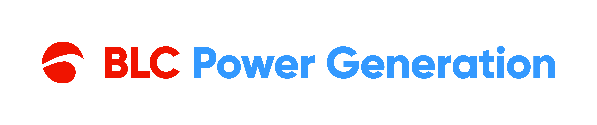

<mat-toolbar class="topbar">
  <button mat-icon-button class="menu-btn" (click)="menuToggle.emit()" aria-label="Menú">
    <mat-icon>menu</mat-icon>
  </button>

  <div class="brand">
         
    <span class="brand-name">Indisponibilidad</span>
  </div>

  <span class="spacer"></span>

  <div class="topbar-actions">
    <div class="topbar-chip">
      <span class="chip-dot"></span>
      <span>Sistema activo</span>
    </div>

    @if (auth.currentUser(); as user) {
      <div class="user-info">
        <mat-icon class="user-icon">account_circle</mat-icon>
        <span class="user-name">{{ user.display_name }}</span>
      </div>
      <button
        mat-icon-button
        class="action-btn"
        aria-label="Cerrar sesión"
        matTooltip="Cerrar sesión"
        (click)="auth.logout()"
      >
        <mat-icon>logout</mat-icon>
      </button>
    }
  </div>
</mat-toolbar>
